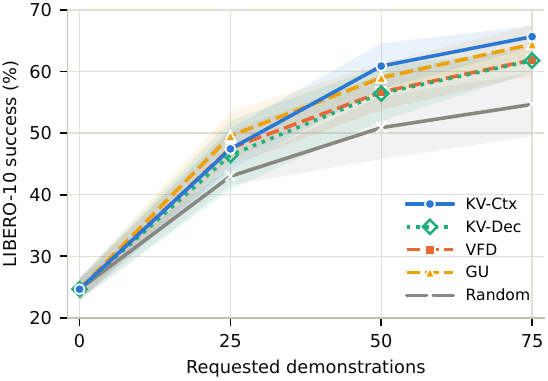
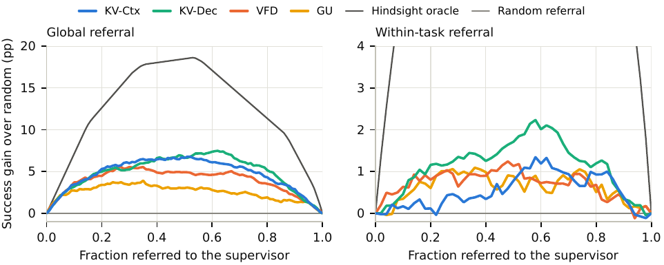
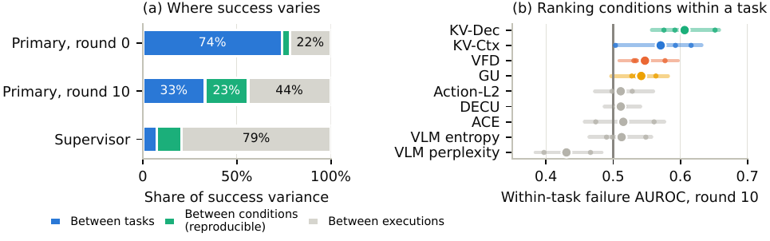
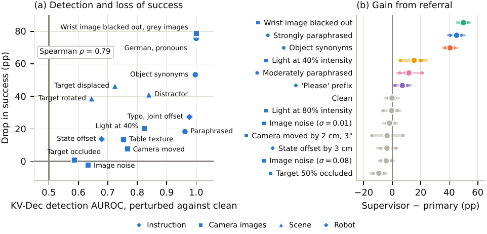

Vision–language–action (VLA) policies need to recognize gaps in their training knowledge to request useful demonstrations or assistance in new situations, especially when failures are costly. Disagreement within an ensemble of independently trained policies can guide these decisions, but requires training and running multiple policies. We propose post-hoc kernel-variance heads that estimate epistemic uncertainty from the embeddings of a single policy. Each head computes the conditional variance of a Gaussian process conditioned on embeddings from the training demonstrations. Fitting requires no regression targets or gradient updates and leaves the policy unchanged. In experiments with SmolVLA on LIBERO-10, the kernel variance heads perform competitively with two-policy ensemble scores in task-level correlation with task success, in demonstration acquisition during active learning, and in referral to a stronger supervisor policy as a proxy for human assistance. For SmolVLA, the head on the vision–language backbone reduces uncertainty-scoring time by up to approximately a factor of 50 compared with ensemble scores, while also substantially reducing setup costs. We also show that the established evaluation protocol on LIBERO-10 primarily rewards recognition of coverage differences between tasks, while execution variability weakens assessment of within-task rankings. Thus, controlled perturbations provide a complementary evaluation: modality-specific heads identify unfamiliar camera, instruction, or state inputs, while fused heads can detect unfamiliar combinations of individually familiar inputs. With a supervisor proxy trained on the evaluated perturbation families, the decoder head improves within-task referral over ensemble disagreement. These findings show that useful uncertainty estimates for adaptive robot learning can be obtained from a single policy. Code available at github.com/post-hoc-vla-uncertainty/post-hoc-vla-uncertainty.
Kernel-variance heads read embeddings the frozen policy computes anyway. Pick a disturbance to see which head responds: each gauge shows how far that head rose above its undisturbed twin run (percentile points, three seeds and all ten tasks; the events marked “not in the paper” come from the pilot policy or are extra), and the run below plays with all six heads.
Pick a disturbance above to play its run: left the undisturbed episode, right the same episode with the disturbance (red band, steps 30–89), and every head as a percentile among clean steps. Illustrative runs of the pilot policy.
Same starting state and seed, so the two runs are identical until the disturbance. Lines show each head as a percentile among all steps of undisturbed runs (50 = typical, 100 = above every clean step). Illustrative runs of the pilot policy.
“do not put both …” from step 30 to 89. The instruction head jumps to 100 at once; the camera heads stay flat until the robot starts to behave differently. VFD rises much less: in the paper (Table 5, E3), its AUROC for a negated instruction is 0.63, against 0.83 for KV-Ctx.
The mirror image: the workspace-camera head saturates, the instruction head does not react.
Left: the undisturbed run. Right: the same run with a disturbance in steps 30–89 (red band). Upper chart: one kernel-variance head of a single policy; lower chart: VFD from a two-policy ensemble. Illustrative runs of the pilot policy; where the policy visibly fails, VFD detects the change about as well as the heads (see Table 5).
The object the robot is reaching for disappears.
In this run, VFD rises from about 24 to 34 in the window; kernel variance jumps far above its clean range.
Every object is thrown to a random pose at every step.
Gaussian noise (σ = 0.35) on both cameras; the policy finishes once the noise stops.
For steps 30–89 the gripper is a rigid block of the same size: the robot looks almost the same but cannot grasp.
A change that does not matter for the task. No score should, and none does, raise much.
The disturbance grows from zero to its maximum over the length of the undisturbed run (dashed line, right-hand scale). Not in the paper.
The heads rise steadily even though the policy copes: unfamiliar input is not the same as failure.
One kernel-variance head per network location, from the raw camera, instruction and state inputs to the action expert. Not in the paper.
Measured over three policy seeds and all ten LIBERO-10 tasks. Mean percentile of each head among clean steps, for the run with the event (solid, with the interquartile band) and the undisturbed run from the same initial state and seed (grey, dashed). The event starts at step 100; the shaded window (100–150) is the one the paper scores (Table 5). Pick an event and the heads to compare; VFD can be added for reference.
Figures and tables of the paper. Questions Q1–Q4 compare the heads with ensemble scores on SmolVLA and LIBERO-10; Q5 tests context-specific heads under controlled perturbations (three seeds, all ten tasks).



| Raw heads | Fused heads | Whole-policy | ||||||||||
|---|---|---|---|---|---|---|---|---|---|---|---|---|
| Perturbation | Workspace | Wrist | Instruction | State | Workspace | Wrist | Instruction | State | KV-Ctx | KV-Dec | VFD | |
| Instruction | ||||||||||||
| S1 | Strongly paraphrased | 0.50 | 0.50 | 1.00 | 0.50 | 0.53 | 0.55 | 0.99 | 0.98 | 0.99 | 1.00 | 0.95 |
| S2 | All object words replaced by synonyms | 0.50 | 0.50 | 1.00 | 0.50 | 0.51 | 0.52 | 0.94 | 0.95 | 0.93 | 0.99 | 0.92 |
| S3 | One typo in a non-object word | 0.50 | 0.50 | 1.00 | 0.50 | 0.50 | 0.51 | 0.88 | 0.85 | 0.86 | 0.97 | 0.82 |
| S4 | Object nouns replaced by pronouns | 0.50 | 0.50 | 1.00 | 0.50 | 0.63 | 0.65 | 1.00 | 1.00 | 1.00 | 1.00 | 0.97 |
| S5 | Translated into German | 0.50 | 0.50 | 1.00 | 0.50 | 0.76 | 0.84 | 1.00 | 0.99 | 1.00 | 1.00 | 0.99 |
| Camera images | ||||||||||||
| S6 | Light at 40 % intensity | 0.86 | 0.96 | 0.50 | 0.50 | 0.91 | 0.96 | 0.60 | 0.64 | 0.80 | 0.84 | 0.77 |
| S7 | Gaussian noise on both images (σ = 0.08) | 0.67 | 0.82 | 0.50 | 0.50 | 0.68 | 0.83 | 0.51 | 0.51 | 0.58 | 0.59 | 0.59 |
| S8 | Workspace camera moved by 4 cm and 6° | 0.91 | 0.49 | 0.50 | 0.50 | 0.95 | 0.54 | 0.67 | 0.70 | 0.84 | 0.89 | 0.79 |
| S9 | Target 75 % occluded in the workspace image | 0.69 | 0.50 | 0.50 | 0.50 | 0.71 | 0.51 | 0.59 | 0.55 | 0.69 | 0.69 | 0.60 |
| S10 | Table texture replaced | 0.73 | 0.89 | 0.50 | 0.50 | 0.75 | 0.89 | 0.60 | 0.63 | 0.73 | 0.76 | 0.73 |
| S11 | Wrist image blacked out | 0.50 | 1.00 | 0.50 | 0.50 | 0.66 | 1.00 | 0.94 | 0.98 | 1.00 | 1.00 | 1.00 |
| Scene | ||||||||||||
| S12 | Target displaced by 10 cm | 0.67 | 0.92 | 0.50 | 0.50 | 0.70 | 0.92 | 0.66 | 0.67 | 0.76 | 0.82 | 0.69 |
| S13 | Another object moved next to the target | 0.74 | 0.93 | 0.50 | 0.50 | 0.73 | 0.91 | 0.63 | 0.62 | 0.75 | 0.80 | 0.65 |
| S14 | Target rotated by 90° | 0.59 | 0.71 | 0.50 | 0.50 | 0.60 | 0.70 | 0.58 | 0.56 | 0.63 | 0.66 | 0.59 |
| Robot | ||||||||||||
| S15 | Arm joints offset by 0.1 rad | 0.79 | 0.99 | 0.50 | 1.00 | 0.83 | 0.98 | 0.68 | 0.94 | 0.87 | 0.97 | 0.94 |
| S16 | Reported end-effector position offset by 3 cm | 0.50 | 0.50 | 0.50 | 1.00 | 0.50 | 0.50 | 0.50 | 0.69 | 0.50 | 0.62 | 0.62 |
| Instruction and scene | ||||||||||||
| S17 | Other task's instruction, its objects absent from the scene | 0.50 | 0.50 | 0.50 | 0.50 | 0.54 | 0.56 | 0.81 | 0.99 | 0.93 | 1.00 | 0.97 |
| Mean over perturbations | 0.81 | 0.86 | 0.80 | |||||||||
| Raw heads | Fused heads | Whole-policy | ||||||||||
|---|---|---|---|---|---|---|---|---|---|---|---|---|
| Perturbation | Workspace | Wrist | Instruction | State | Workspace | Wrist | Instruction | State | KV-Ctx | KV-Dec | VFD | |
| Instruction | ||||||||||||
| E1 | Strongly paraphrased | 0.52 | 0.56 | 1.00 | 0.56 | 0.54 | 0.52 | 0.98 | 0.76 | 0.97 | 0.95 | 0.90 |
| E2 | Switched to another task's instruction | 0.59 | 0.63 | 0.50 | 0.68 | 0.61 | 0.60 | 0.79 | 0.77 | 0.88 | 0.93 | 0.92 |
| E3 | Negated (“do not …”) | 0.48 | 0.48 | 1.00 | 0.49 | 0.46 | 0.46 | 0.90 | 0.59 | 0.83 | 0.78 | 0.63 |
| Camera images | ||||||||||||
| E4 | Light at 40 % intensity | 0.80 | 0.77 | 0.50 | 0.46 | 0.85 | 0.78 | 0.58 | 0.51 | 0.75 | 0.72 | 0.64 |
| E5 | Workspace camera bumped by 2 cm and 3° | 0.66 | 0.46 | 0.50 | 0.44 | 0.74 | 0.45 | 0.52 | 0.47 | 0.55 | 0.54 | 0.58 |
| E6 | Target 75 % occluded for 60 steps | 0.66 | 0.49 | 0.50 | 0.47 | 0.74 | 0.46 | 0.63 | 0.50 | 0.68 | 0.64 | 0.61 |
| E7 | Wrist image frozen for 60 steps | 0.55 | 0.48 | 0.50 | 0.55 | 0.57 | 0.46 | 0.58 | 0.58 | 0.65 | 0.67 | 0.70 |
| E8 | Heavy noise on both images (σ = 0.35) | 1.00 | 1.00 | 0.50 | 0.60 | 1.00 | 1.00 | 0.88 | 0.62 | 1.00 | 0.99 | 0.98 |
| Scene | ||||||||||||
| E9 | Target displaced by 6 cm | 0.60 | 0.79 | 0.50 | 0.59 | 0.65 | 0.77 | 0.73 | 0.63 | 0.78 | 0.78 | 0.80 |
| E10 | Another object moved next to the target | 0.65 | 0.74 | 0.50 | 0.51 | 0.71 | 0.75 | 0.63 | 0.57 | 0.75 | 0.70 | 0.68 |
| E11 | Target removed | 0.72 | 0.73 | 0.50 | 0.56 | 0.79 | 0.69 | 0.81 | 0.69 | 0.88 | 0.89 | 0.90 |
| Robot | ||||||||||||
| E12 | Arm pushed (joints offset by 0.1 rad) | 0.77 | 0.82 | 0.50 | 0.82 | 0.78 | 0.81 | 0.82 | 0.67 | 0.88 | 0.87 | 0.85 |
| Mean over perturbations | 0.80 | 0.79 | 0.76 | |||||||||
| Score | Within-task nAUC | Global nAUC | Automated | Failure AUROC |
|---|---|---|---|---|
| KV-Ctx | 0.40 ± 0.05 | 0.35 ± 0.02 | 0.65 ± 0.22 | 0.76 ± 0.03 |
| KV-Dec | 0.46 ± 0.03 | 0.41 ± 0.02 | 0.76 ± 0.13 | 0.79 ± 0.01 |
| VFD (two policies) | 0.40 ± 0.03 | 0.39 ± 0.03 | 0.73 ± 0.14 | 0.75 ± 0.00 |
| Cross-replicate reference | 0.21 ± 0.03 | 0.21 ± 0.03 | 0.53 ± 0.25 | 0.62 ± 0.01 |

@misc{keller2026posthoc,
title = {Post-hoc Epistemic Uncertainty for Vision--Language--Action Policies},
author = {Keller, Johannes and Blo{\ss}e, Albrecht M. and Lindenmeyer, Adrian and
Neumuth, Thomas and Schneider, Daniel},
year = {2026},
eprint = {2610.29730},
archivePrefix = {arXiv},
url = {https://arxiv.org/abs/2610.29730}
}